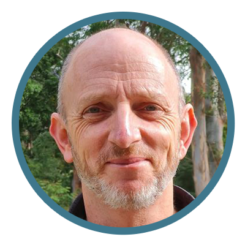

Meet the experts
You’ll be led through the course by Professor Susan Broomhall FAHA FRHistS, Director of the Gender and Women’s History Research Centre, in the Institute for Humanities and Social Sciences, who teaches on medieval, Renaissance and Baroque Rome onsite in Rome, and researches the history of the early modern world.
We’ll be joined along the way by other ACU staff, including:
Professor Gil Davis
Meet Professor Gil Davis
Professor of Archaeology and Ancient History, an archaeologist and ancient historian specialising in archaeometry and epigraphy, and Director of the Ancient Israel Program.
Dr Sarah Gador-Whyte
Meet Dr Sarah Gador-Whyte
Research Fellow, Biblical and Early Christian Studies, in the Institute for Religion and Critical Inquiry, with expertise in Early Christianity, late-antique and Byzantine hymnography and homiletics, Byzantine liturgy, late-antique cultural interactions, late-antique history and historiography, religious conflict, and the history of emotions.
Dr Michael Barbezat
Meet Dr Michael Barbezat
Research Fellow, Medieval and Early Modern Studies, in the Institute for Humanities and Social Sciences, with expertise in medieval and early modern history, history of sexuality, medievalism, LGBTQIA+ history and culture, medieval European religious, intellectual and cultural history, history of Christianity, history of emotions, medieval heresy, and magic.
Associate Professor Victoria Carruthers
Meet Associate Professor Victoria Carruthers
Associate Professor, Art History and Theory, in the School of Arts and Humanities, with expertise in modern and contemporary art history, feminist theory, dada and surrealism, and transformational learning.
Professor Darius von Güttner Sporzyński
Meet Professor Darius von Güttner Sporzyński
Campus Dean, Canberra, and historian of Central Europe with expertise in East Central Europe, the Jagiellon Dynasty, Christianisation, medieval history, the Sejm, Poland, queenship and queens consort, crusades, Hospitallers, and histories of trade and consumption.

Professor Nick Carter
Meet Professor Nick Carter
Professor, National School of Arts and the Institute of Humanities and Social Sciences, a historian with expertise in modern Italian history, modern European history, the Italian Risorgimento, Italian Fascism, historiography and difficult heritage.
Dr Sarah Bendall
Meet Dr Sarah Bendall
Senior Lecturer, Gender and Women’s History Research Centre in the Institute for Humanities and Social Sciences, with expertise in women and gender history, material culture and dress history, experimental history and recreative practice, history of the body, beauty cultures, histories of trade and consumption, artisans, guilds and production, and the early modern world.